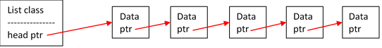
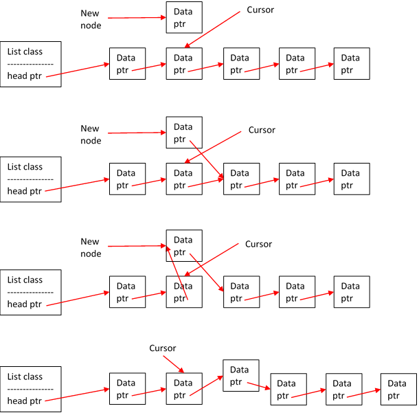
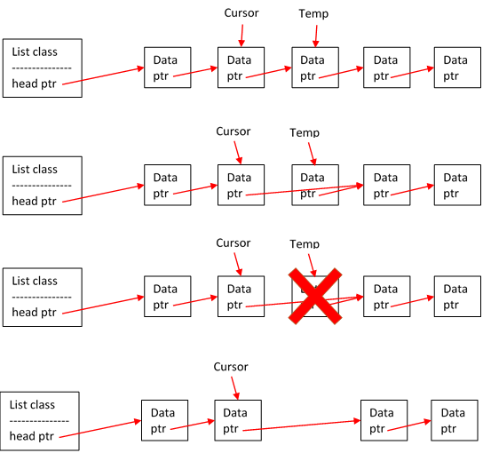
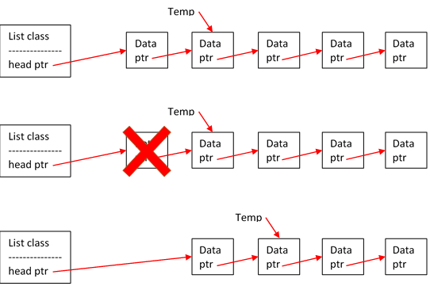
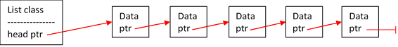
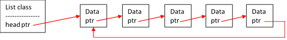
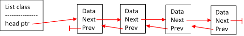
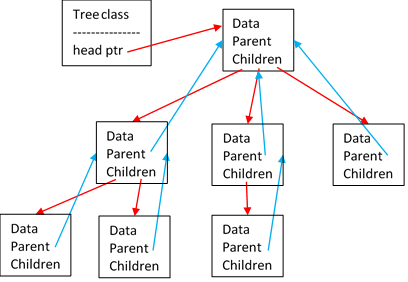

Linked Lists
Linked lists are another important concept, as they are in the implementation of many data structures, in a variety of situations. As of yet, we’ve only used arrays to store collections of data. A linked list is another way to store data, but with a different set of advantages and disadvantages.
The main advantage of linked lists compared to arrays is that they have no set limit on capacity—the size can grow and shrink dynamically when data is added and removed. Conversely, to change the size of an array, one must reallocate, copy, and delete the array. Further, a linked list does not need to allocate a contiguous block of memory like an array does&mdah;making it much faster to initially construct.
However, there is also a significant disadvantage to linked lists: to access the data within them, your program must traverse a number of pointers. On the other hand, arrays, because they are stored in a contiguous block of memory, can retrieve data at any index in a short, constant amount of time.
Note — diagrams will be very helpful this lesson.
Nodes
The basic component of a linked list is what’s called a node. A node is what it sounds like: it represents one item of the list and includes one piece of data. A node has two parts: the data and one or more pointers to other nodes.

Links
The pointer sections of the nodes are what constitute the “links” of a linked list. Each node is linked to the next in the list by storing its address. With several nodes, the links create a chain. In this situation, if you don’t have access to the first node in the chain, you are not able to access one or more nodes. When you’re creating a linked list, you should always store a pointer to the “head,” or first node to prevent losing nodes and hence leaking memory.
Adding and Removing Nodes
That’s pretty much the entire basic concept of linked lists—though there are other types of linked lists that add more complications.
The fundamental operations on a linked list are, of course, adding and removing nodes. Suppose we have a “cursor” pointer to some node in our list. Adding a node after the cursor is extremely simple: have the new node point to the node after the cursor (newNode->next = cursor->next), then have the cursor point to your new node (cursor->next = new node). Removing a node after the cursor is similarly simple.
Remember that these examples are only one instance of an operation. Always consider the possible initial states of your list when implementing an operation, so that you don't, for example, accidentally try to delete off the end of the list. Image what you would need to do if you want to remove a node, but your cursor is pointing to the last node in your list.
These example operations are assuming a singly linked list.
Inserting a Node after the Cursor:
Removing a Node after the Cursor:
Again, there are many more situations than shown here. For example, what if you wanted to remove the node that the cursor is pointing to? What if you want to insert a node before the cursor? There are too many possibilities to go into great detail here—you can figure out what to do on your own.
Diagramming is extremely helpful! Drawing out processes like the ones above can make linked lists easy and intuitive to deal with.
Clearing Nodes
Here's another example list operation: clearing all nodes. At some point, you’re always going to want to clear your linked list (destructor, etc.), and you don’t want to leak memory when doing so. Again, diagramming the process is a great idea.
Repeat this process to remove all nodes.
Other Types of Linked Lists
These examples have been diagrammed assuming a singly linked list. However, there are several other types you should be able to work with.
Singly Linked
A list is singly linked if each node has one pointer to the next node in the chain. This is the simplest type of list. The end node should have “NULL” as the next node.
Circularly Linked
A circularly linked list is exactly the same as a singly linked list, except that the final node’s “next” node points back to the head of the list.
Doubly Linked
A doubly linked list is what it sounds like: each node has two pointers, one to the next node, and one to the previous node. This design makes traversing the list backwards way faster than a singly linked list (where you would have to traverse from the beginning), but comes at the cost of storing an extra pointer in each node.
You can also make a doubly linked list circular by having the first node point back to the last node and the last node point up to the first node.
Trees
Finally, there are linked trees. Trees can a bit more complicated to deal with, but are quite interesting. They’re also what they sound like: each node can have multiple “child” nodes and points back towards its “parent” node.
